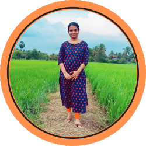

I would like to say here that I have joined easyenglishwithvini course for few days. So far I have had a very good experience. Before this I had joined another online English course. Different from that, the lessons are arranged in a way that everyone can understand very well. Thank you very much ma'am.Everyone can join this with confidence.100% Guaranteed.
Gopu
This online class of yours is very helpful. I have been living in the English Country for a year. But it was very difficult for me to speak. I started with your level 1. Now I can say small sentences without fear. I used to be able to speak a little before this class, but the fear of being wrong made me very anxious. But after completing level 1 of your online class, many of my doubts were cleared. Now I want to do level 2. This class will be very beneficial for everyone who wants to learn English.
Bincy
My name is Praveen Paul. I am working as a manager in a private company. I loved the English language even when I was in school. But I found very difficult to speak. The main reason for this is that there is no opportunity to speak. Another reason is that i should not have known how to say many things in English. I used to watch many youtube channels to solve my problem. But when I started watching this channel I liked it a lot. This channel explains things in a very simple and beautiful way. It is explained in a way that any common man can understand. And from here I could learn how to say simple things in English that are needed in normal life. Started practicing speaking with it. So I was able to improvise a lot. This course is designed in a very useful manner. I was also able to learn grammar and many very useful things in English. Vini Mam's this course and youtube channel have helped me a lot. Thank you very much Vini mam for your effort. May God bless you abundantly.
Praveen
Enrolling for Vini’s Spoken English classes was one of the best decisions that I made. Before, I did not have the confidence to speak in English. I could not even understand children's books. Now, I am able to read and understand children's novels. I can form small sentences on my own. I even understand Grammar much better now. Vini's classes are very organized. She covers basic topics with a lot of examples and practice questions. She is such a good teacher. She is like a friend.
Riyana
I appreciate Vini's efforts and the structure she has created for easy learning. It's great that she presented the same examples for all tenses, which made it easier to understand and revise the lessons. The live sessions have been helpful in correcting mistakes and providing a platform to apply what we've learned. The quizzes after each section are also a valuable exercise for revising the sessions. Overall, it is a well-designed learning experience.
Vineesh
I used to get very nervous when I had to speak in English. I joined this course to overcome my fear of speaking English. I started studying systematically according to Vini mam's instructions. She pointed out some mistakes I was making while speaking and corrected them. She cleared all my doubts at the earliest. Slowly I got out of my comfort zone and started speaking English with confidence. I'm very happy to have such a sincere trainer like her.
Lakshmi

This course covers all the areas necessary for speaking English confidently.Vini has explained all the sections in an easily understandable manner and it was never boring.
This course was definitely an eye opener for me as it helped to clarify all my doubts and misunderstandings
about using this language.I feel relieved from all the confusions I had about framing sentences.
Thank you Vini for all your efforts & hard work, for being an amazing tutor and for your patience and compassion. May God bless you..!!
Mariyam
Thank you so much for this wonderful course.
It was a simple and effective explanation of all the necessary grammar we need in day to day conversations..
Learning those lessons repeatedly and thoroughly as well as practising in a consistent way can surely elevate one's English levels.
Our live sessions were so interesting that sometimes I felt like 1hr passed like 10 mins and wished if it would last a little longer..
Your course material is very useful, content oriented and simple.
Thank you once again for your sincere and dedicated effort to make the English learning easier.
Leeba
I just started watching your classes and have found them to be incredibly helpful and engaging. I can understand easily. Having watched your videos on YouTube before joining this course, I was already familiar with your outstanding presentation style and teaching abilities. Iam truly grateful to you.
Anu
This course is very amazing
Vini ma'am ന്റെ ytub channel തുടക്കം മുതലേ ഞാൻ കേൾക്കാറുണ്ട്. മറ്റുള്ള English പഠന ചാനലിൽ നിന്നും ഏറെ വ്യത്യസ്തമാക്കുന്നത് ക്ലാസിന്റെ ശൈലിയും, അത് നന്നായിട്ട് മനസ്സിലാക്കിതരുവാൻ ള്ള കഴിവ് വളരെ വലുതാണ് ....എനിക്ക് English എഴുതാനും സംസാരിക്കാനും വളരെ ആഗ്രഹമാകുന്നു. ഞാൻ 1, 2, spoken English course attend ചെയ്തതാണ് but still ഒരു മാറ്റവും ആയിട്ടില്ല. എന്നാൽ ഇതിൽ ചേർന്ന് ഏതാനും ദിവസങ്ങൾ ആയപ്പോഴേക്കും എനിക്ക് confident ഉണ്ട് എഴുതാനും സംസാരിക്കാനും പറ്റും എന്നത്.... .join ചെയ്ത് ക്ലാസ്സ് കേൾക്കാൻ തുടങ്ങീട്ട് കുറച്ച് ദിവസമാവുന്നുള്ളൂ. Courseനുള്ള പ്രത്യേകതയായി തോന്നിയത് ma'am നന്നായിട്ട് Repeat ചെയ്യുന്നുണ്ട് ഗ്രാമറിലെ important ആയിട്ടുള്ള ഭാഗം അപ്പോൾ കൂടുതൽ മനസ്സിലാക്കാൻ സാധിക്കും ഓരോ lesson ലും quiz 👍🏽 Teacher സ്നേഹത്തേടെ കുട്ടികളോട് പറയുന്നത് പോലെയ ണ് ma'am പറയുന്നത് പിന്നെ doubts clear ചെയ്ത് തരുന്നുണ്ട്. ചോദ്യങ്ങൾക്ക് answer തരുന്നു.എല്ലാം കൊണ്ടും നല്ല course ആണ്
Shahanas
I take this opportunity to tell about madam vini's course, I'm Sebin Working as a supervisor at trivandrum international airport. After my higher secondary & 6 months Diploma I joined at the Airport now i completed 11yrs, But I'm not confident while speaking English. Now I'm more confident about my English language because of her course it's help me lot to improve myself and also she put's lots of effort for us to understand English easily. Thank You madam for always being with us, that's the big motivation for Us!
Sebin
I can understand your class. Before I had fear for speaking but, now I can speak without fear. Thank you🥰
Liby Sajan
❮
❯